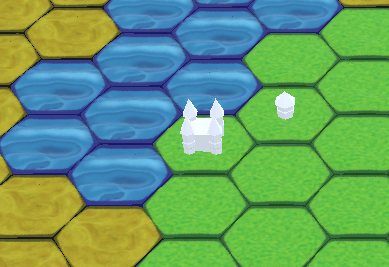

Turowa gra strategiczna, tworzona w zespole 3-osobowym.
W tym projekcie stworzyłem mapy, modele, klikanie, zaznaczanie, obsługę przycisków.
Aktualnie tworzę ruch postaci, system walki.

Pianistka
Dość długa animacja postaci grającej na pianinie, którą zrobiłem przez wakacje hobbystycznie
oraz eksperymentalnie, trochę licząc że może stanie się popularna na youtube. Zyskałem dzięki
niej doświadczenie filmowe i programistyczne (postać z błędami sama gra na pianinie, klawisze
oraz kafelki wylatujące z nich są automatyczne).
Reklama gry mobilnej
Pierwsza tego typu animacja z mojej strony, dlatego nie została dopracowana. Tutaj przede
wszystkim chciałem zaprezentować możliwości jakimi dysponuję (proceduralna klepsydra, rozpadanie
się i przelatywanie kart, animacja zdobywanych punktów). Tło oraz parę kart wygenerowałem z
pomocą AI poglądowo.